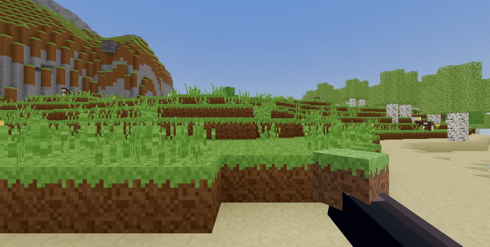
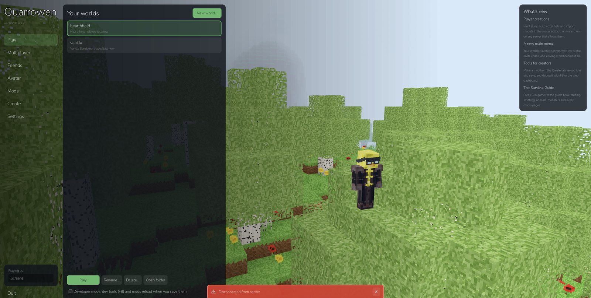

Quarrowen
One app plays any world, because it carries no game of its own. Blocks, creatures, recipes and rules all arrive from whichever server you join.
Apple silicon · signed and notarized · updates itself · Real footsteps, wind and water, and a float to watch while you fish.
Windows (45M) — unsigned, so Windows asks before running it, and it does not update itself yet.
0.41.1 is the last release of the engine in this shape, and it still works. The games that came with it were retired in September while the next version is rebuilt around a new one, so there is nothing to browse here yet. The reference is current.
Block games are a genre, the way platformers are. What Quarrowen does differently is where the game lives and who is allowed to change it.
Other block games ship a game and let you mod it. Quarrowen ships an engine: the client has no blocks, no creatures and no rules of its own. It downloads them from whichever server it joins, so the same app is a survival world on one server and a story on the next.
Mods are installed on the server only. A child joins and the content arrives — no launchers, no mod folders, no matching versions between friends, nothing to go wrong at bedtime. A mismatch is refused at the door with a sentence saying so, rather than breaking quietly.
Blocks, creatures and their AI, world generation, machines, crafting, UI panels, commands, whole games. Every game that ships with it is a mod too. The engine only supplies capabilities, which means anything a bundled game does, yours can do.
Write a mod in GDScript, or in JavaScript that runs in a sandbox. There is no marketplace, no approval queue and no revenue share — you write a folder with a manifest in it and put it on your server.
No account, no sign-up, no email, no telemetry, no store, no currency, no advertising. A player is a key on their own computer. Your worlds are files on your own machine or your own server, and they stay there.
The whole engine is published — renderer, server, protocol, AI, tests. Free to play, modify and share for anything noncommercial. If you want to know how something works, the answer is a file, not a support ticket.
Your worlds live on your own machine or your own server. No accounts, no email, nothing collected, and only the people you allow can join.

Three files and a pull. The machine never compiles anything, and several worlds can sit beside each other with players walking between them through portals.
QW_IMAGE=ghcr.io/quarrowen/quarrowen/server:0.41.1 QW_HUB_IMAGE=ghcr.io/quarrowen/quarrowen/hub:0.41.1 docker compose pull && docker compose up -d
Every line of this engine was written with Claude Code, from an empty folder — the renderer and its Rust mesher, the authoritative server and its protocol, mob AI and pathfinding, the mod API and its sandbox, world generation, the tests and the tooling. No engine template and no asset packs: every texture, model and sound is generated by a script.
It was built for one family's children, and it is free for yours. Free to play, modify and share for anything noncommercial; commercial use needs a separate licence. github.com/quarrowen/quarrowen